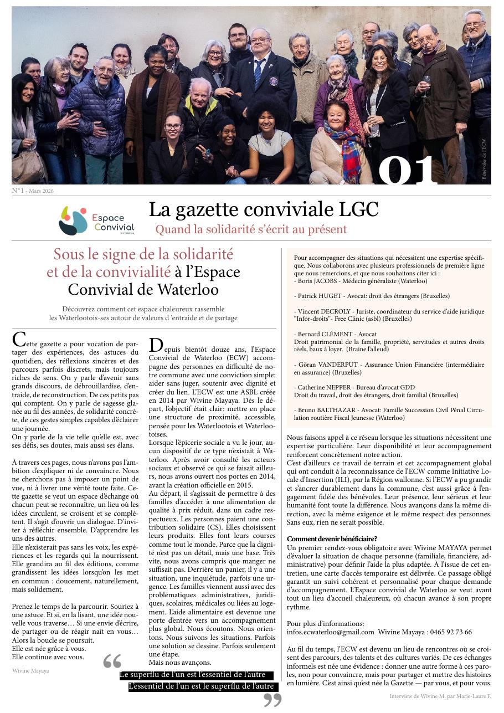

01
ESSENTIEL
Alimentation
Colis alimentaires hebdomadaires. Produits frais, de saison, dignes. Sans jugement, sans questionnaire humiliant.
Un mot
On a commencé simple : une épicerie, des colis, un bonjour. Et puis on a écouté. Ce qu'on a entendu a changé ce qu'on fait. Aujourd'hui, on s'occupe de tout ce qui aide une famille à se remettre debout.


quelques moments — photos d'archives, petites et grandes
On a ouvert les portes en 2014. Créé l'ASBL en 2015. Depuis, aucun salarié — que des bénévoles, à plein temps dans leur cœur et à temps libre sur leur semaine.
Au début, c'était une distribution alimentaire, une fois par semaine. Puis des gens nous ont raconté le reste : le loyer en retard, la lettre pas comprise, le rendez-vous médical loupé, l'entretien d'embauche qui angoisse. On s'est dit qu'on ne pouvait pas écouter sans agir.
Alors on a ajouté : logement, papiers, emploi, santé. Pas par stratégie — par réponse à ce qu'on entendait. Aujourd'hui des milliers de familles sont passées par ici. La plupart sont reparties debout.
On ne dit pas non à grand-chose. Si c'est dans nos cordes, on fait. Si c'est pas dans nos cordes, on connaît quelqu'un.
Colis alimentaires hebdomadaires. Produits frais, de saison, dignes. Sans jugement, sans questionnaire humiliant.
CV, lettres, entretiens blancs, formations courtes, mise en relation directe avec des employeurs locaux.
Aide à la constitution du dossier, médiation avec propriétaires, orientation vers le logement social.
Décryptage de courriers, démarches administratives, accompagnement chez l'avocat ou au tribunal si nécessaire.
Orientation vers médecins, hôpitaux, Mutuelle, psychologues. Parfois, un simple rendez-vous chez le dentiste change une vie.
Aide à la gestion budgétaire, orientation vers les aides sociales, négociation avec les créanciers, plan de redressement.
Vous poussez la porte. On vous offre un café. On écoute — sans chronomètre, sans formulaire interminable. On comprend d'abord.
On fait le tour de votre situation : alimentation, logement, emploi, santé, papiers. Pas parce qu'on fouille — parce qu'on connecte.
On co-construit un plan. Étape par étape. Réaliste. Vous gardez toujours la main — on vous accompagne, on ne décide pas à votre place.
On ne lâche personne. Point régulier, ajustements, appel de soutien quand ça coince. Vous avez un bénévole référent. Toujours.
Au-delà de l'épicerie et de l'accompagnement, il y a ces moments qu'on fabrique nous-mêmes, avec nos moyens et beaucoup d'envie.

On a un grand potager, entretenu à la main. Les légumes partent directement à l'épicerie : donnés aux familles, ou vendus à prix symbolique.
C'est bien plus qu'un potager. C'est un atelier à ciel ouvert, un endroit où on discute en arrachant des mauvaises herbes, où on apprend des voisins, où on se retrouve.

Chaque décembre, on refuse que Noël soit un jour comme un autre pour nos familles. Alors on fabrique un Noël pour tout le monde. Deux volets, deux belles choses.
Un traiteur prépare un menu gastronomique complet. Entrée, plat, dessert. Servi dans les règles — pour que personne n'ait à se contenter de moins, ce soir-là.
Tu t'inscris, tu reçois la lettre d'un enfant au Père Noël. Tu choisis son cadeau, tu le déposes à l'épicerie — on s'occupe de le lui remettre. (c'est un peu notre moment préféré de l'année)

Une fois par an, on investit la salle Jules Bastin à Waterloo. Deux représentations déjà. Deux fois salle pleine. À chaque fois, les mêmes retours : on rit, on pleure un peu, on ressort ému.
Les bénéfices soutiennent directement notre action. Venir voir la pièce, c'est applaudir deux fois.
Un journal qu'on imprime, fait avec nos moyens — pour raconter la vie de l'Espace, mettre en lumière des bénévoles, et donner la parole à celles et ceux qu'on accompagne.

Huit pages, tirées sur du vrai papier. Des portraits, des chroniques, des photos, un peu d'humour, beaucoup de vraies histoires. On la distribue à l'épicerie et lors des événements — et maintenant, tu peux la feuilleter ici-même.
Chaque premier jeudi du mois, nos portes te sont grandes ouvertes pour 5€. Parce qu'entre le loyer et les cours, manger ne devrait pas être ce qui te stresse.
—
Inscription obligatoire. Les absents non excusés ne pourront plus s'inscrire par la suite.
Rencontre individuelle, confidentielle, sans engagement. Trente minutes pour poser ce qui pèse.
On est zéro salarié, une vingtaine de bénévoles, tous profils confondus. Chacun·e apporte ce qu'il a : un peu de temps, une compétence, une voiture, une langue, un savoir-faire, deux bras.
On cherche en permanence des renforts : logistique, accompagnement, cuisine, transport, administratif, traduction, oreille attentive, jardinage… Si vous hésitez, venez quand même boire un café — on trouvera.
Comment nous rejoindre

Pas de salaire, pas de frais gonflés. Ce que vous donnez finit dans un colis, un ticket de bus pour un rendez-vous, un cadeau pour un enfant, du chauffage pour la permanence.
1 colis alimentaire pour une famille, pendant une semaine.
Donner 10€Fournitures scolaires complètes pour 3 enfants.
Donner 25€Un mois de permanences d'accueil. Café, chauffage, matériel.
Donner 50€Accompagnement médical complet pour une personne en difficulté.
Donner 100€Vous préférez un montant libre ?
Faire un don personnalisé